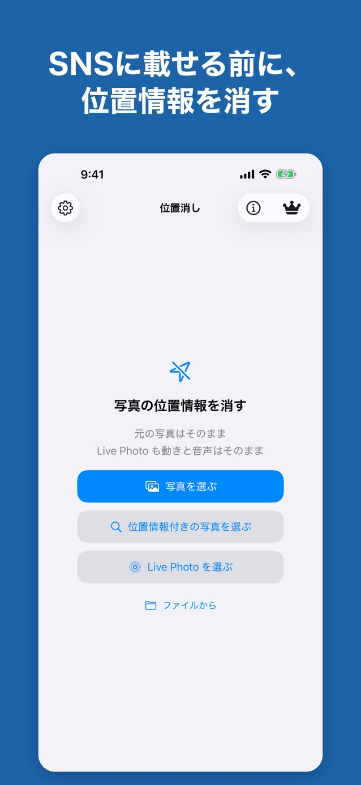
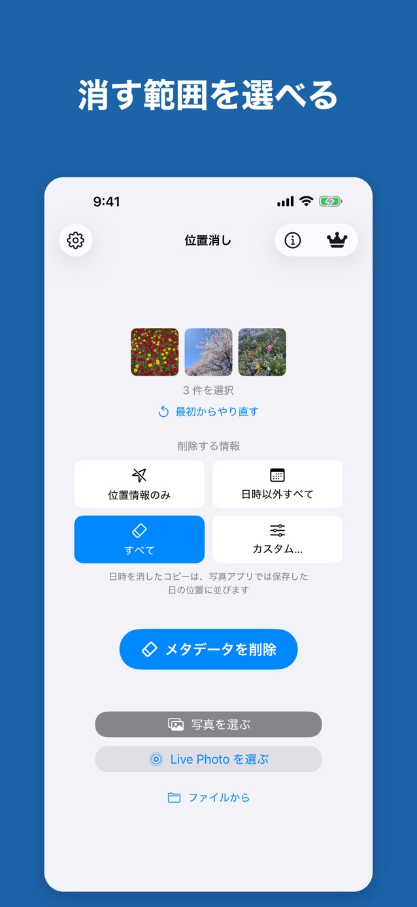

位置消し
写真のコピーから、位置情報を削除。
写真を選んで、位置情報などのメタデータを削除したコピーを保存・共有。元の写真はそのまま残ります。

iOS 17以降のiPhoneに対応しています。
渡す前に、写真の情報を確認。
- 無料版で、写真のコピーからGPS位置情報を削除。
- プレミアム（買い切り）では「日時以外すべて」「すべて」「カスタム」も選べます。
- 位置情報が付いた写真の検索や、写真アプリの共有シートからの処理にも対応。
- Live Photoは動きと音声を保ったまま処理します。

写真の処理と、広告の情報を分けて。
写真の処理は端末内で行い、写真・写真内のGPS位置情報・メタデータを運営者や広告サービスへ送信しません。無料版ではAdMobとUMPによる広告配信・同意管理に伴い、端末情報やIPアドレスなどが収集される場合があります。写真の中に写った場所や風景を消す機能ではありません。共有先やOSの通信は、それぞれの設定と取り扱いに従います。